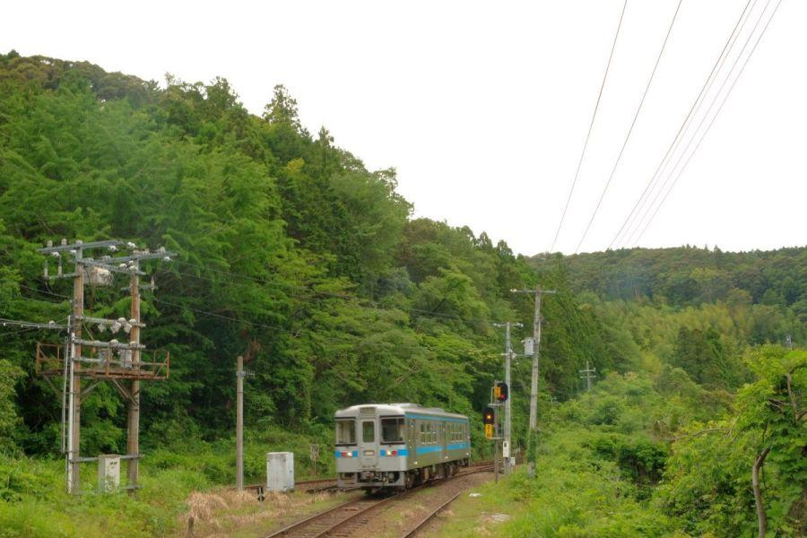

各駅停車が通過する駅？ 山中のスイッチバック駅 < 新改駅 / 高知県香美市 >
新改駅(しんがいえき)
高知県はJR土讃線にあるこちらの駅。
一見すると行き止まりの駅のようですが、駅名標の隣駅表示が両方あるように 途中駅です。列車はどのように発着するのでしょうか。
行ったり来たりする列車
駅へ列車が入って来ました。各駅停車の多度津行き。
新改駅に入線、乗客が下車します。
この時 列車から下りたのは、保線作業員さんたちだけでした。
運転士さんが反対の運転台に回り、

本線へ向かって発車。
けれど今度は 本線ではなく側線へ入っていきます。
再度方向を変えて本線へ。行先である多度津を目指して進んで行きました。
列車が行った後は 元通り、静かな山間の駅に戻りました。
四国に二箇所だけ存在するスイッチバック駅
新改駅は 四国内に二つだけ存在する、スイッチバック駅。
(もう一つは同じ土讃線、徳島県の坪尻駅)
国内でもいくつか存在する駅の形ですが、主に勾配がきつい区間の途中に設置されています。

この線路の形状は、 「シーサスクロッシング」 と呼びます。
真ん中の本線に、
手前が高知方面から駅に入って来る引き込み線。
奥が阿波池田方面から駅に入るために 一旦退避する側線。
先ほどの列車は 上り列車(阿波池田方面)なので、手前の引き込み線を走行して駅に進入。発車する際は奥の側線に一旦入り、方向転換して次の駅に向かいました。
下り列車(高知方面)の場合は その逆。まず奥の側線に入り 方向転換して駅へ進入。発車する際は手前の引き込み線を走行して本線と合流して、次の駅へ向かいます。
各駅停車が通過する山間の駅
昭和5年(1930) 同区間 開通
昭和10年(1935) 新改信号所(しんかいしんごうしょ) 設置
昭和22年(1947) 信号所→駅に昇格
昭和31年(1956) 駅名の読みを しんかい→しんがい に変更
土佐山田から繁藤(しげとう)の駅間が長く、急勾配が連続する同区間。
それでいて単線であることから、どちらかの列車が同区間に進入してしまうと 手前の駅で長時間の停車を余儀なくされるため、中間で行違いを行うことができる待避所として設置されました。
しかしながら本線(土讃線)が平地ではなく 坂の途中にあるため、上り列車が停車することができない(蒸気機関車時代であれば猶更)。
それゆえ本線から少し外れた 僅かばかりの平坦地に待避所が置かれたため、後に駅に昇格した際に スイッチバックを行う駅となりました。
周辺の路線図
アンパンマンミュージアムがある嶺北地域への路線バスが発着する 土佐山田駅
安芸・室戸方面への ごめんなはり線(土佐くろしお鉄道阿佐東線)乗り換え駅である 後免駅
高知県の中心 高知駅
新改駅以北は、大歩危駅から徳島県に入ります。
下り(高知方面)... 6便/日
上り(阿波池田方面)... 4便/日
上り列車の便数の少なさはさることながら、始発列車が11時40分！
この駅の上り方面は、朝のラッシュが存在しません。
もっとも、午前に運行される各駅停車は この便を除いて2本ありますが、いずれも新改駅を通過します。各駅停車なのに停まりません。
下り便は 同県内で多少人の流れが存在するからか、それぞれ近い時間帯に2本設定されています。
新改駅から高知駅へは、最速33分。
(途中駅で特急列車の退避・行き違いがあるため 便によって運行時間が異なります)
こんな山の中ですが、ほどなくして景色は変わり 小一時間列車で県の中心に到着することができます。
JR土讃線・新改駅
< 自家用車 >
高松駅から 約2時間、127km
高知龍馬空港から 約30分、16km
< 列車 >
新改駅下車
運行本数が少ないので注意
※ 主な地点からの最速・最短距離